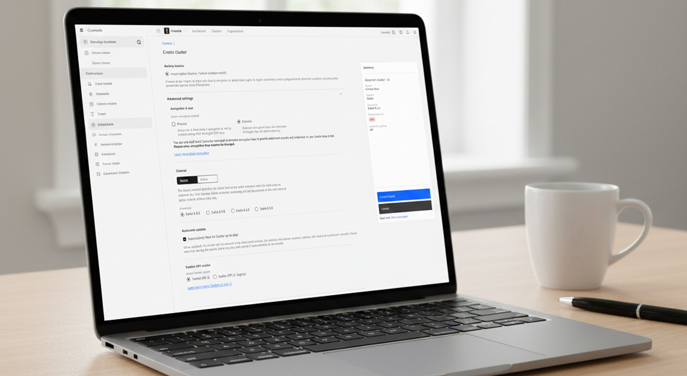
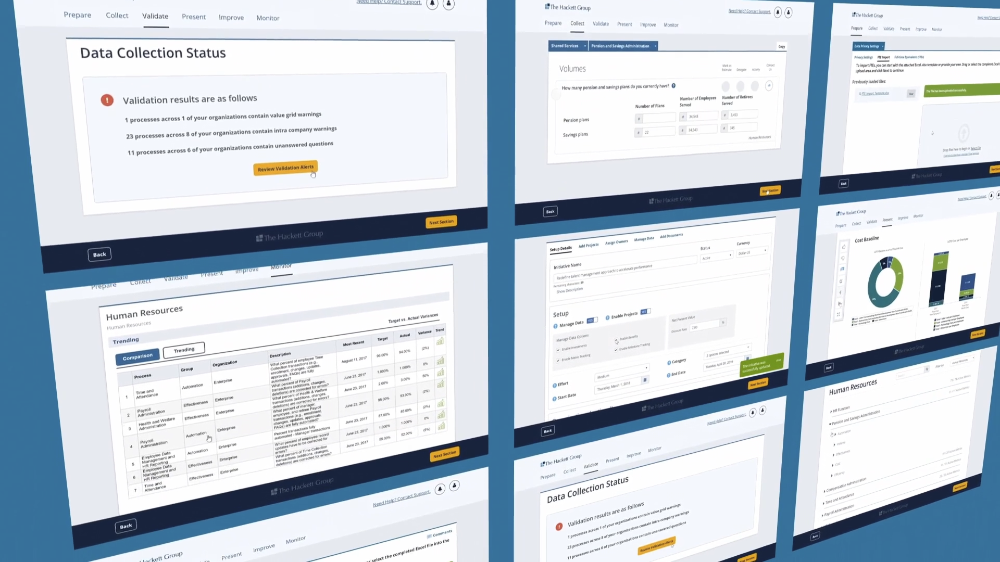

How did I design a security feature that achieved an 85% enterprise adoption rate, a 40% reduction in support tickets, and a 30% decrease in misconfigured deployments?
I crafted a comprehensive end-to-end solution enabling users to seamlessly interact with a UI, securely migrating data into a customer-owned key management system.

Scaled Ibancar's loan origination by 3.5x while achieving profitability 6 months ahead of plan
How I increased conversion rates by simplifying a complex financial onboarding flow for Ibancar's loan application process.

How I redesigned The Hackett Group's finance dashboard to help senior executives compare 15,000+ metrics efficiently and make data-driven strategic decisions
I enhanced the data benchmarking platform, utilizing data to inform product strategy.
Design System Governance
Implementing scalable and consistent design systems.
Data-Driven Design
Leveraging data to inform design decisions and product strategies.
Technical Foundation
Building a bridge between design and engineering to ensure technical feasibility.